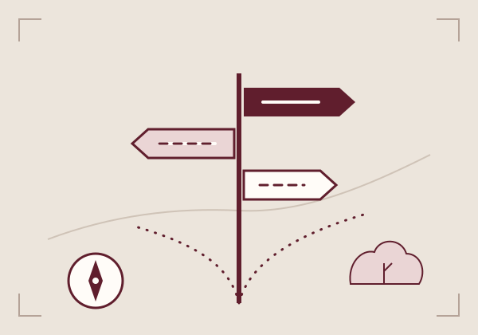

404 / Outside the scope
A wrong turn.
A useful way back.
That page is not here. There is still a clear route to the work, guidance or person you were looking for.

01 / The work
Find a security service
Twelve practical areas of review.
02 / The scope
Build an assessment
See the shape of the work and the fees.
03 / The people
Talk to a consultant
Bring the question you are working through.